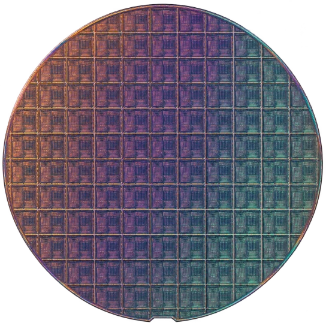
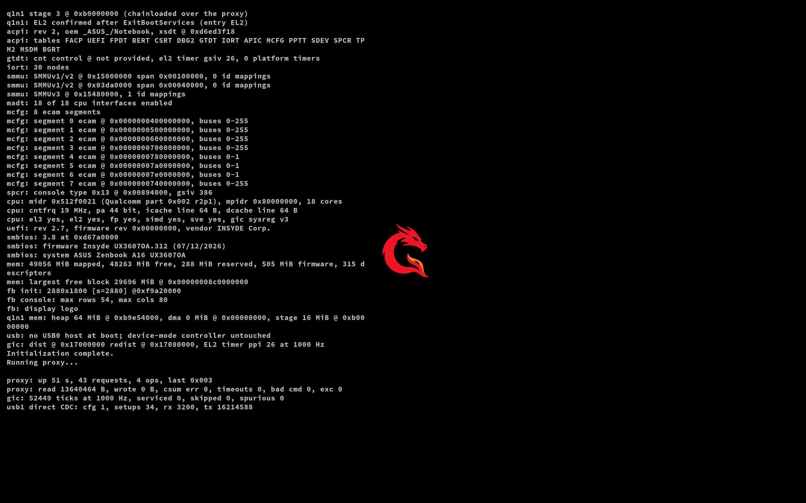

My Pentium 4
The contacts facing the camera are where this chip meets the board. To follow what happens inside, I trace a four-integer sum through an x86 loop.

Each rectangle is one chip before the wafer is cut. Change its width or height and watch where whole dies disappear along the curved edge.
The model centers one die on the wafer, leaves 0.1 mm between neighbors for cutting, and reserves a 3 mm rim. Coverage is the fraction of the inner circle occupied by whole dies.
The contacts facing the camera are where this chip meets the board. To follow what happens inside, I trace a four-integer sum through an x86 loop.

These are pixels read back from the Zenbook A16’s framebuffer. The q1n1 console shows what the machine could report before a guest OS took over.